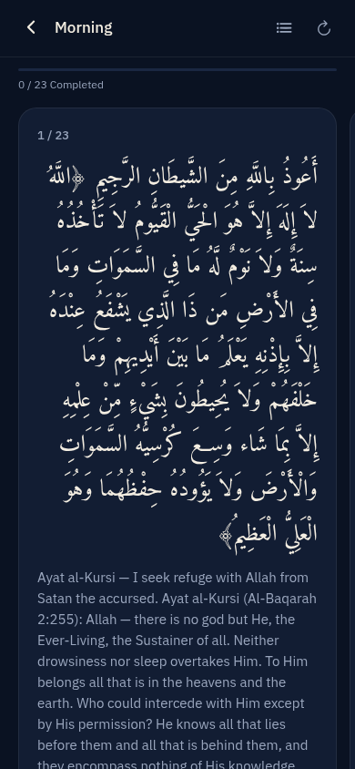
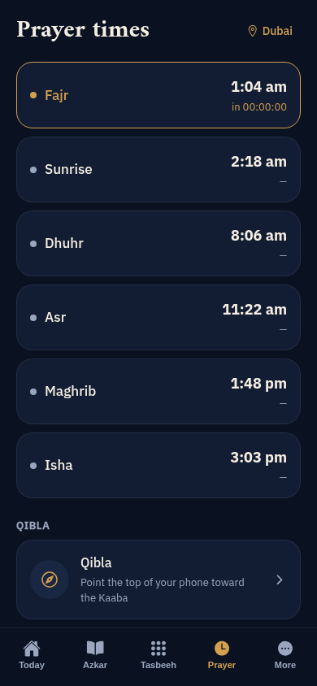
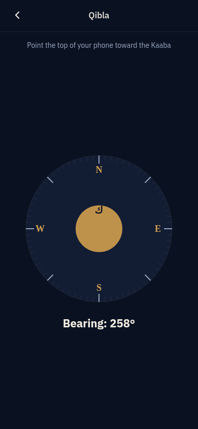
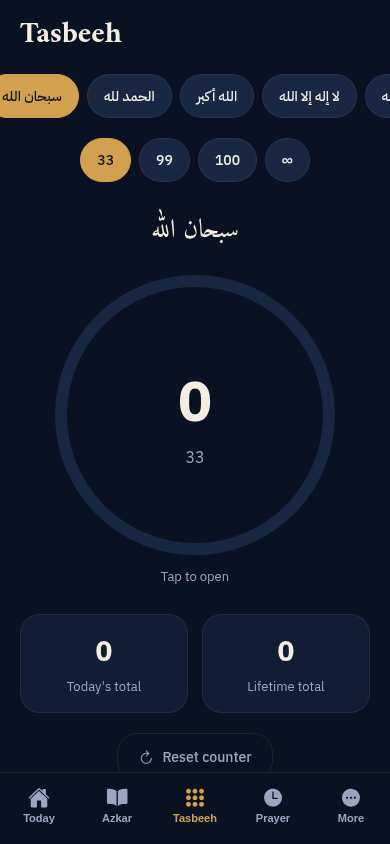
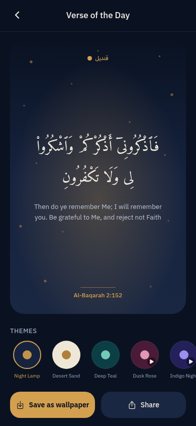
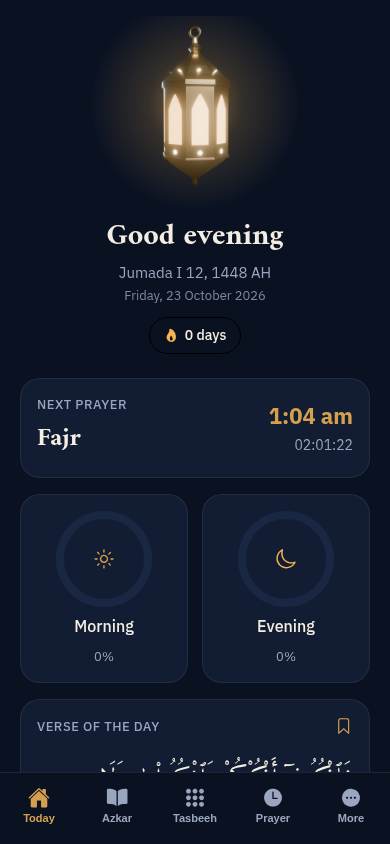
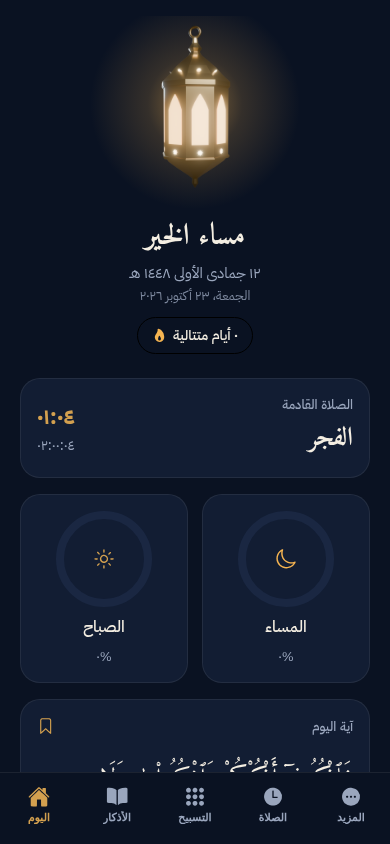
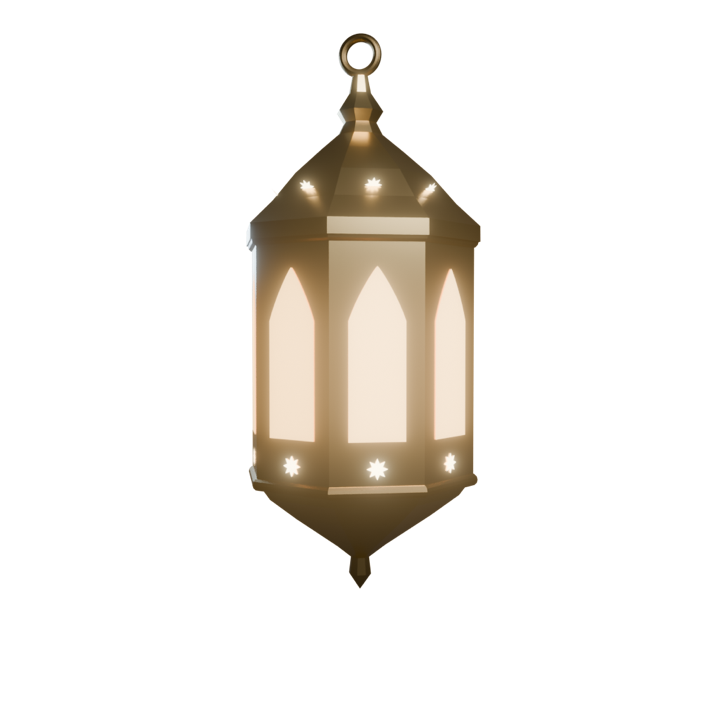

Azkar you actually finish
Morning, evening, after prayer, sleep and waking sets. Tap anywhere to count; Qindeel moves to the next dhikr on its own and marks the set done for today.

قنديل Coming to iPhone and Android
Qindeel puts your azkar, prayer times, Qibla and a verse for each day in one quiet app. It works offline, asks for no account, and never shows an ad on a worship screen.
Why we built it
Many prayer apps place a banner under your dua, ask you to sign up before they show Fajr, and go blank the moment the signal drops. Qindeel was built the other way around.
No ads
No banners, no videos, no ad tracking. Just your azkar.
No account, no tracking of your worship
Your streak, counts and bookmarks live on your phone and nowhere else.
Everything works on a plane
Azkar, the Mushaf, prayer times and Qibla are bundled inside the app.
What is inside
Morning, evening, after prayer, sleep and waking sets. Tap anywhere to count; Qindeel moves to the next dhikr on its own and marks the set done for today.

Pick your city by GPS or from 262 bundled cities. The calculation method follows your country, and you can switch it or your Asr madhab any time.

A smoothed compass with a gentle buzz the moment you face the Kaaba.

Targets of 33, 99, 100 or open ended, with today and lifetime totals.

59 verses and 8 themes. Save today's as a wallpaper or share it.

Wake with remembrance.
Pause for every prayer.
Rest with a light on.
نورٌ ليومك
How it works
Arabic with true right to left layout, or English. Switch whenever you like.
Use GPS or search the list. Your location is used for prayer times and stays on the device.
The next prayer, your azkar progress, your streak and today's verse are already waiting.

Built on trusted texts
Choose Naskh, Amiri or Scheherazade New and set the size that suits your eyes. Meanings in English sit right under each dhikr.
Azkar from Hisn al-Muslim. Verse text from Tanzil.net (Uthmani). Mushaf from the Madina Mushaf, used unmodified. Prayer times calculated on device with the open source adhan library.

Questions
Yes. Qindeel is free to download and every worship feature is free. All eight verse themes are included.
No. Qindeel has no ads and no ad tracking.
Yes. Azkar, the Hisn al-Muslim library, verses, prayer times for 262 cities and the Qibla compass are bundled inside the app, so they work offline.
No. There is no sign up and no login. Your streak, counts, bookmarks and settings are saved on your phone.
Qindeel uses your approximate location only to calculate prayer times and the Qibla direction. It is stored on your device and never linked to you.
Qindeel picks the common method for your country automatically using the adhan library. You can change the method and choose a Shafi’i or Hanafi Asr time in settings.
Yes. Every dhikr is fully voweled, and you can read it in Naskh, Amiri or Scheherazade New at the size you prefer, with the English meaning underneath.
Yes. The complete Madina Mushaf is included as 604 real text pages with a Surah and Juz index, bookmarks and a reading position that is remembered for you.
Qindeel is coming to iPhone and Android. Join the launch list and we will send you a single email with the store links on launch day.

Free to download. No account. One email on launch day, then nothing else.